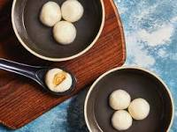

Glutinous rice balls

Price: $10.99
A popular snack all over China, glutinous rice balls, or tang yuan, are filled with red bean, sesame, peanut, and other sweet fillings that ooze out from mochi-like dumplings skins. The dumpling skins owe their pleasantly gummy texture to glutinous rice flour, which produces a chewier dough.